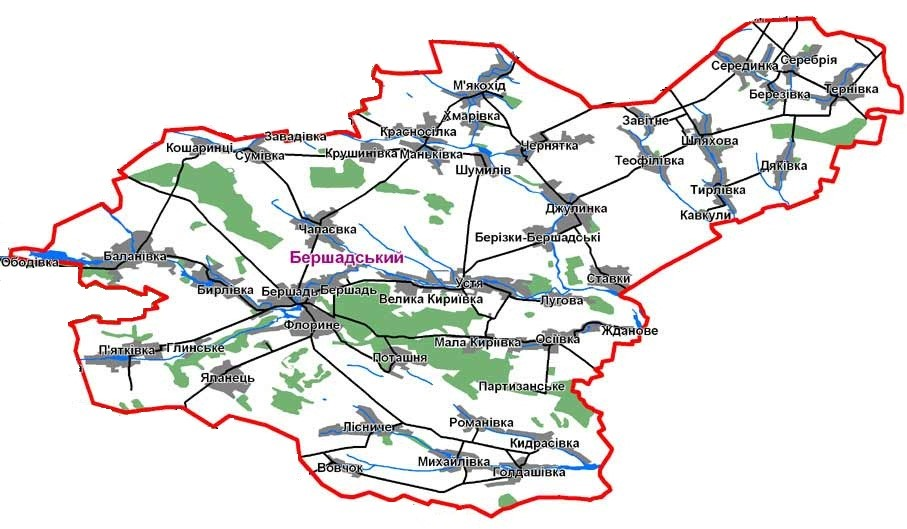
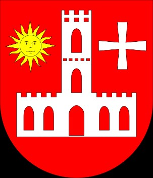
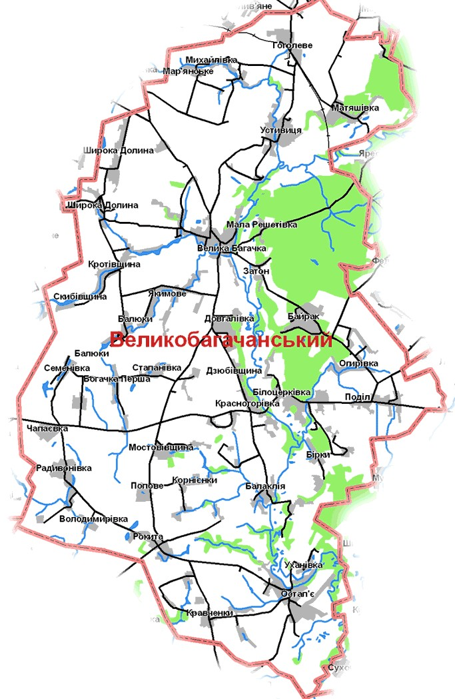
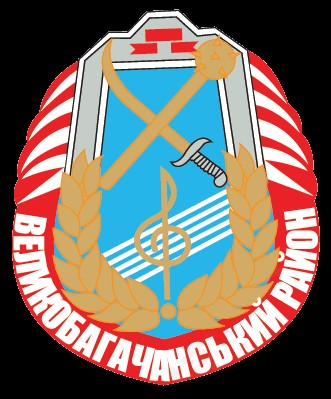

Повернутися до попередньої сторінки
Берщадський район — район Вінницької області в Україні. Населення — 58449. Адміністративний центр — місто Бершадь. (рис.1)
Великобагачанський район — адміністративно-територіальна одиниця у центральній частині Полтавської області України. Районним центром є смт Велика Багачка. (рис.4) Район поділяється на 16 сільських і 2 селищні ради. Населених пунктів — 74. У 2009 році з обліку зняті села Бондусі та Малинщина.Заснований у 1925 році. У сучасних межах відновлений в грудні 1966 року. Територія сучасного району була освоєна людиною ще за часів кам'яної доби. Це підтверджують знахідки археології. З X століття територія району контролюється давньоруськими князями. У складі Київської Русі вона належить до Переяславської землі, на короткий час відходить до Чернігівського та Курського князівств.[2] Після татаро-монгольської навали землі по Пслу відходять до Київського князівства, а з 1363 року — до складу Великого князівства Литовського. У середині XVII століття французький інженер Боплан видав першу карту України. На ній вже позначено село Богачка. З 1650 року, коли карта побачила світ, починається писемна історія Великобагачанського краю. Район не обійшли стороною буремні події. Богацька сотня в складі Миргородського полку була активним учасником визвольної війни українського народу 1648—1654 рр., захищала від шведів свою землю у Північній війні.[2]
Район поділяється на 1 міську раду і 28 сільських рад, що об'єднують 45 населених пунктів. Адміністративний центр — місто Бершадь. Територія, де зараз розміщений Бершадський район, до 14 ст. перебувала під монголо-татарською владою, згодом— у складі Брацлавського воєводства Литовської держави, а з 1569 р. це землі Речі Посполитої. Після Андрусівського миру ці землі відійшли до Польщі, а з 1672р — вони під владою турків, які зруйнували місто і навколишні села. Під час найстрашнішого Другого голодомору 1932—1933 рр. кількість загиблих вважається рівною 18186 чоловік.
Але цифра точно применшена, оскільки спухлих від голоду людей ніхто не рахував, а збирали підводами і скидали в ями за селами.[1] У середині ХХ століття розпочалось криваве побоїще — Друга світова війна. Немало молодих людей було направлено на штурм Фінляндії тощо. 29 липня 1941 року район було окуповано німецько-румунськими військами й поділено на дві частини. На фронтах воювало понад 17 тис. бершадців, майже 10 тис. з них загинули. Бершадський район за післявоєнні роки став одним із провідних в області і в країні з вирощування високих урожаїв сільськогосподарських культур. 05.02.1965 Указом Президії Верховної Ради Української РСР передано Вікнинську та Червонянську сільради Бершадського району Вінницької області до складу Гайворонського району Кіровоградської області. У 1991 році 52112 громадян району (95 %) на Всеукраїнському референдумі проголосували за підтвердження акту проголошення незалежності України.[1]
|  Рисунок 1 - Карта Бершадського району |
 Рисунок 2 - Прапор Бершадського району |
Рисунок 3 - Герб Бершадського району |
 Рисунок 4 - Карта Великобагачанського району |
Рисунок 5 - Прапор Великобагачанського району |
 Рисунок 6 - Герб Великобагачанського району |
|---|